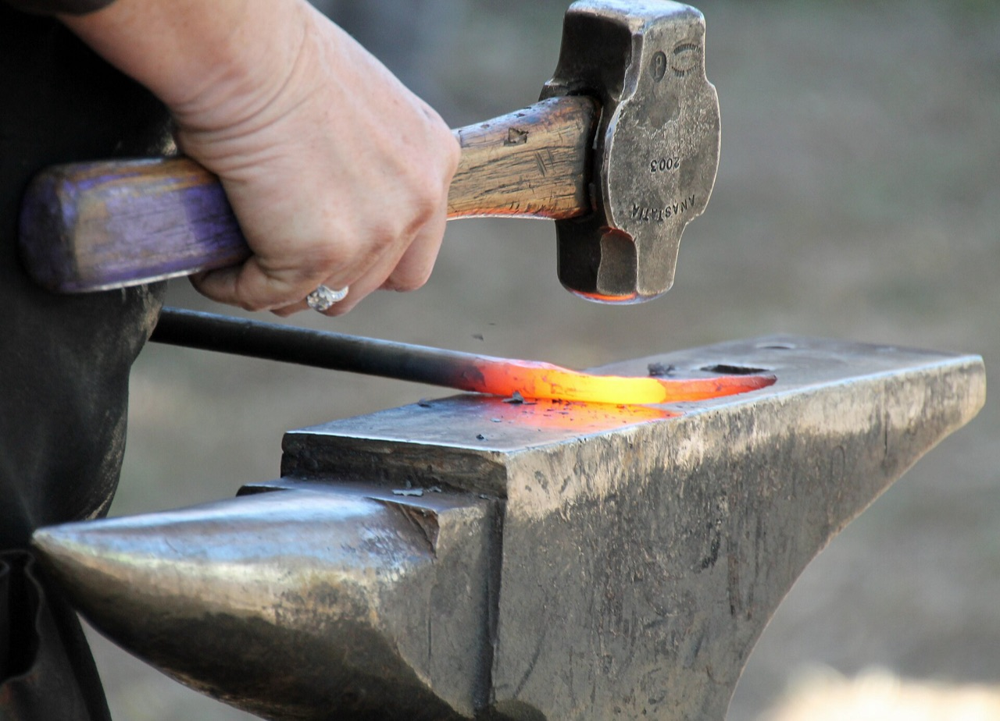

Into the fire, and soft again
Chapter one ended at a limit. Hammer blows fill copper with trapped folds, or dislocations. It becomes harder and eventually cracks. People found a way past this very early. A hardened piece put in a fire is soft again after it cools.
We do not know how anyone first noticed this. But the objects from Çayönü Tepesi, dated to 8200–7500 BCE, already show heating between rounds of hammering. It was done rarely, without an understanding of the finer points. Later, heating became part of the usual routine. People hammered and heated native copper many times until it reached the shape they wanted.
Two things soon become clear when you try this.
You can cool it either way. Leave the copper to cool in the air, or drop it into water. It will be soft in both cases. Remember this when we reach steel, iron with added carbon, in chapter six. There, almost everything depends on how fast it cools.
Copper comes out of the fire black. A dark coating forms on its surface. It flakes off under the hammer.
Annealing: hammer, heat, repeat
Heating that makes metal soft again is called annealing. It turns forging into a cycle. Hammer until the metal is hard. Heat it. Hammer again. You can repeat this almost without limit, though each heating loses a little metal to the black coating.
The ability to change shape without cracking is called ductility. Hammering uses it up. Annealing restores it.
A campfire is more than hot enough. Given enough time, copper needs only 200–300 °C. A campfire’s flames and embers reach 600 °C and above.
Ten thousand years of use without an explanation
The first people to work copper left no written account. In a book from 1540, the Italian craftsman Vannoccio Biringuccio gave the earliest written rule found so far: anneal the object during every round of hammering, or whenever it needs it. The rule was right. It did not explain why.
People began looking for a reason in the nineteenth century. At first, they got it wrong. They thought hammering destroyed the crystal structure, leaving the metal without that order, like glass. Heating, they believed, made it form crystals again. The German researcher Kalischer used the word “crystallisation” for the change on heating in 1881. In 1882, he reported that rolling, squeezing metal between two rollers to make it thinner, destroyed crystal structure, and that annealing restored it. He worked with cadmium, a soft metal, as well as silver and gold. This gave the process its current name: recrystallisation, meaning “forming crystals again”.
The microscope corrected that idea. From 1864, the English researcher Henry Sorby studied steel that had been polished and etched, treated to reveal its structure. By 1887, he had shown that forging stretched the grains rather than destroying them. In 1899–1900, Ewing and Rosenhain watched metal as it was stretched. They reached two conclusions. Metal changes shape by sliding its crystal layers, while remaining a crystal. And the hotter the annealing, the faster recrystallisation happens.
The last part of the explanation was the fold we met in chapter one. Dislocations were proposed in 1934 and seen in the 1950s.
What fire does to the folds
Meet temperature
Atoms in a crystal never stand still. Each shakes about its own place. Temperature tells us how much they shake. The hotter the metal, the further each atom moves back and forth.
Keep heating, and the movement grows until neighbouring atoms get in each other’s way. The order breaks down: the metal melts. For copper, this happens at 1085 °C.
Two stages: recovery and recrystallisation
Work-hardened metal stores some of the work spent on hammering it. Between one and five percent remains in the distorted lattice around the folds. This state is unstable, like a compressed spring. At room temperature, the spring cannot release: the atoms shake too little to rearrange themselves. Heat lets them move, and the metal loses its folds in two stages.
Recovery. This is the first stage. Folds start moving. Two nearby folds of opposite signs meet and cancel each other out. The extra half-row of one fills the gap in the other. The grains stay as they were. Hardness falls a little.
Recrystallisation. Small patches of regular lattice appear where the old lattice is most distorted. They grow in all directions, taking over the old metal and its folds. New grains without folds replace the old grains. Hardness falls to its original level. Ductility returns in full. The objects from chapter one show the difference. The spearhead with fully renewed grains has a hardness of 59 units. The axe left after cold forging measures 116.
We can put numbers to this change. In heavily work-hardened metal, between a hundred million and ten billion folds cross each square millimetre of a cut surface. In annealed metal, the range is ten thousand to a million. The folds do not vanish completely. But their number falls by thousands or millions of times.
How hot does it need to be?
Recrystallisation has no fixed temperature like melting. A rough rule for pure metals puts its start at about 0.3–0.4 of the melting temperature. But you must count from absolute zero, the lowest temperature in nature, −273 °C, rather than from zero Celsius. For copper, that gives 130 to 270 °C. Measurements range from about 165 °C for very pure copper to 270–300 °C for ordinary copper. There are reasons for this range:
- More work hardening lowers the temperature needed. The metal has more stored energy.
- More time allows the process to finish at a lower temperature.
- Impurities raise the temperature, often greatly. Four thousandths of a percent of iron in copper raises it by about a hundred degrees.
Work-hardened copper can become soft again at a lower temperature if it stays hot for longer. In measurements, copper became soft at 200–300 °C after about an hour in a furnace. In a campfire, the copper is heated for only a minute or two. It must get hotter than 200–300 °C to become soft that quickly.
Copper only starts to glow at 525 °C. That is far above the 200–300 °C needed for recrystallisation with about an hour of waiting. The hotter the metal, the faster recrystallisation goes. That is why craftspeople use a faint glow as a visible sign that a short heating is enough. The glow is a practical guide, not a measurement of how much of the metal has recrystallised.
What if you leave it too long?
If the metal stays in the fire after recrystallisation, a third stage begins: grain growth. Large grains take over small ones. There are fewer grains, and each is larger. Metal with large grains is weaker. So overheating does harm even well below the melting temperature.
You can make the grains smaller again by hammering and annealing. First hammer the cold metal again, carefully because it is now weaker. Then anneal it again without overheating or leaving it in the fire too long. During this anneal, recrystallisation replaces the old large grains with new ones. The more you hammer the metal before annealing, the smaller the new grains will be. Too little hammering will not let new grains form at all.
How to anneal well
These are the working rules used today when annealing copper and silver with a torch and shaping them with a hammer. Each has a reason inside the metal.
- Stop at a barely visible dull red glow. The glow starts at 525 °C. Copper can recrystallise at 200–300 °C with about an hour of waiting. Higher heat makes recrystallisation faster. At a faint glow, the metal is far hotter than it needs to be for a slow anneal. The craftsperson watches the copper in the fire. When it starts to glow faintly red, they take it out. For the craftsperson, this glow is a sign that such a short heating is enough. There is no need to heat it longer or make it hotter. A bright glow means overheating. Grains grow and the metal weakens. Bending it then brings out a rough surface called orange peel: the individual large grains show through.
- Heat the whole object evenly. The glow should be the same all over. Keep the flame moving instead of holding it in one place. Uneven heating causes cracks and warping, an unwanted change of shape. A patch that has not become hot enough stays hard.
- Judge the colour in dim light. You cannot see a faint glow in sunlight. In bright light, you notice the colour too late and overheat the metal. Jewellers still switch off the lamp above the bench or anneal in a dark room. There is also this explanation: the “dull red” rule began when the forge stood in the darkest corner of the workshop. Under modern lighting, any visible glow already means overheating.
- Anneal before cracks appear. Annealing removes folds. It does not heal a crack: the broken bonds do not join up again.
- Cool it in water if you are in a hurry. The cooling speed does not matter for copper. It became soft while it was in the fire.
- Remove the black coating. Copper oxide breaks easily. Today, a weak acid removes it after each anneal. We do not know how the earliest craftspeople removed it.

A hammer hangs over a glowing iron bar on an anvil. This is iron, not copper: its orange to yellow glow is far brighter than the faint dull red at which copper annealing should stop. The colour of the glow shows how hot the metal is.
Photo: Sarah Stierch, CC0, Wikimedia Commons

What good work looks like. The edges have no cracks. The wall is equally thick all over. The surface is smooth, with no orange peel. Each sign tells the same story: the person making it stopped in time and did not overheat it.
A sheet, a bowl, and another limit
Alternating forging and annealing removed the main limit from chapter one. The shape no longer had to be finished before the metal became hard. A thin sheet, a long wire or a deep bowl became a matter of patience.
Another limit remained. An object could not be bigger than the nugget it came from, and native copper is rare. Two pieces could not be melted together: copper melts at 1085 °C. Individual embers can be hotter than that. But an open campfire cannot bring the whole piece to that temperature. Chapter three will explain why, and how people got past this limit.
By now, people have been putting copper in fires every day for several thousand years. In the ground beside the copper lie green and blue stones. In chapter three, one of those stones will go into a very hot furnace.